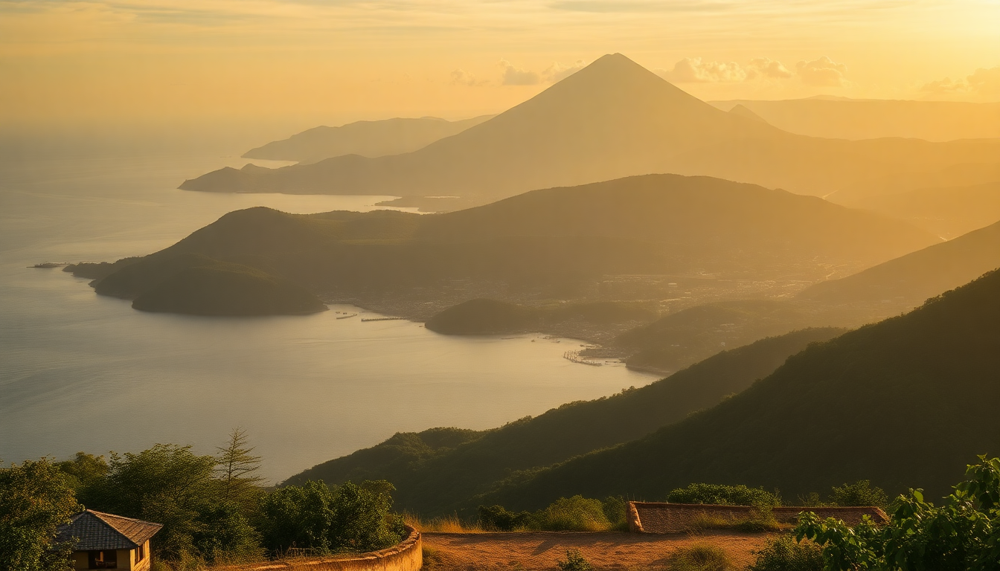

Best Day Trips from Cartagena: Islands, Mud Volcano & Palenque

I spent a week based in Cartagena’s walled city, and by day three I was itching to get out. The old town is beautiful, but the real Colombia starts just beyond the city limits. I took three day trips — one by boat, one by van, one with a guide — and here’s what actually delivered.
What’s the deal with the Rosario Islands?
The Rosario Islands are the most popular escape from Cartagena, and for good reason. The water is genuinely Caribbean-clear, and the coral reefs make for decent snorkeling. But you need to choose your island carefully. I booked a shared boat tour through my hotel and ended up at Isla Grande, which is the largest of the 27 islands. The boat ride from the Muelle de la Bodeguita dock took about an hour.
The main beach on Isla Grande is packed with day-trippers by 11 a.m., so I walked ten minutes to Playa Libre, a quieter stretch with fewer vendors. Lunch was a set menu at Restaurante Donde Chucho — fried fish, coconut rice, patacones — and it was solid, not spectacular. The snorkeling gear they handed out was foggy and old. Next time I’d bring my own mask.
- Isla Barú — closer to Cartagena, but the beach at Playa Blanca is overrun with hawkers. Skip it.
- Isla Cholón — party island with loud music and floating bars. Fun if you want to drink, not if you want to relax.
- Isla Grande — best balance of calm and amenities. Stay overnight at Ecohotel La Cabaña if you can swing it.
- Snorkeling spots — the reef near Isla San Martín has clear water, but visibility depends on weather.
Is the Volcán de Lodo worth the drive?
The Totumo Mud Volcano is a gimmick, and I mean that in the best way. It’s a 45-minute drive from Cartagena, and you climb into a crater filled with warm, dense gray mud that makes you float. You bob around with a dozen other people while local men massage your shoulders. It’s ridiculous, but it’s also genuinely fun.
The catch: it’s a tourist-only operation. You pay an entrance fee (around COP 25,000), then tip a “masseur” (they expect COP 10,000–20,000), then pay a woman to wash you in the lagoon afterward (another COP 5,000). The whole thing takes 90 minutes. I went with a shared van from Cartagena organized by my hotel, but you can also take a bus from the Terminal de Transporte to the town of Luruaco and then a mototaxi.
- Entrance fee — COP 25,000 per person, cash only.
- Tipping — bring small bills. COP 10,000 notes work.
- Mud quality — mineral-rich, said to be good for skin. I broke out less for a week after.
- Lagoon wash — the women scrub you with buckets of lagoon water. It’s not exactly spa-level, but you’ll be clean.
- Best time — go at 8 a.m. to avoid crowds and heat.
What’s special about San Basilio de Palenque?
San Basilio de Palenque is a village about an hour east of Cartagena, founded by escaped enslaved Africans in the 1600s. It’s the first free town in the Americas, and the locals still speak Palenquero, a Spanish-Bantu creole. This is not a beach trip — it’s a cultural one. I hired a local guide named José through the tourism office in the town square, and he walked me through the narrow streets for two hours.
The highlight was watching a traditional drumming and dance performance at the Casa de la Cultura. A group of teenagers played lumbalú rhythms, and the energy was electric. I also ate a lunch of sancocho de gallina (hen stew) at Restaurante La Casa de la Abuela, which was the best meal I had in Colombia — rich, peppery, and served with homemade arepas.
- Getting there — take a bus from Cartagena’s Terminal de Transporte to the town of San Basilio. It’s about COP 12,000.
- Local guide — mandatory for the main tour. José charges COP 50,000 for a group of up to four.
- Casa de la Cultura — free entry, but tip the musicians.
- Restaurante La Casa de la Abuela — order the sancocho and the jugo de corozo (a tart local fruit drink).
- Souvenirs — handwoven mochila bags sold by women on the main street. Bargain politely.
How should I get around for these trips?
For the Rosario Islands, you need a boat. The public ferry from the Muelle de la Bodeguita runs to Isla Grande and Isla Barú for about COP 50,000 round trip. For Volcán de Lodo, a shared shuttle from Cartagena costs COP 80,000 and includes the entrance fee. For San Basilio, the bus is cheap and reliable — I took a colectivo from the terminal and it dropped me right at the town entrance.
I used Uber within Cartagena (it works and is safer than taxis at night). For the day trips, I booked through my hotel, but you can also walk into any travel agency on Calle del Sargento in the old town. Just negotiate the price — I paid about 30% less than the first quote.
- Rosario Islands — book a boat tour or take the public ferry from Muelle de la Bodeguita.
- Volcán de Lodo — shared shuttle (COP 80,000) or bus to Luruaco plus mototaxi.
- San Basilio de Palenque — bus from Terminal de Transporte (COP 12,000).
- Within Cartagena — Uber or official taxis with yellow plates.
What should I pack for these day trips?
I learned the hard way. For the Rosario Islands, bring reef-safe sunscreen (most shops sell the chemical kind that kills coral), a rash guard, and cash — there are no ATMs on Isla Grande. For the mud volcano, bring a change of clothes and a plastic bag for your muddy swimsuit. For San Basilio, bring water and a hat; the town square has no shade.
- Rosario Islands — reef-safe sunscreen, snorkel mask, cash, towel.
- Volcán de Lodo — change of clothes, plastic bag, small bills for tips.
- San Basilio — water, hat, sunscreen, cash for lunch and souvenirs.
- General — a dry bag for electronics, a reusable water bottle, and a power bank.
FAQ
Is the Rosario Islands day trip overrated? It depends on your expectations. The water is beautiful, but the beaches on Isla Grande are crowded by noon, and the snorkeling gear is poor. If you want quiet, stay overnight on Isla Grande or go to Isla San Martín. If you just want a boat ride and a swim, the day trip is fine.
Can I do the mud volcano and Palenque in one day? Technically yes, but I wouldn’t. They’re in opposite directions from Cartagena — the volcano is west, Palenque is east. You’d spend four hours in transit. Do them on separate days, or pick one and do it well.
Do I need a guide for San Basilio de Palenque? Yes. The town requires you to take a local guide to visit the main sites. It’s not a scam — it’s how the community controls tourism and keeps money local. José was excellent, and the tour lasts about two hours.
Conclusion
- Rosario Islands — best for a beach day, but skip Playa Blanca and bring your own snorkel gear.
- Volcán de Lodo — a silly, memorable experience. Go early, bring small bills, and lean into the absurdity.
- San Basilio de Palenque — the most rewarding trip. Hire a guide, eat at La Casa de la Abuela, and don’t rush.
- Transit — buses are cheap and reliable for Palenque and the volcano. Boats are the only option for the islands.
- Cash — every single one of these trips requires cash. ATMs in Cartagena charge high fees. Withdraw a lump sum at the airport.